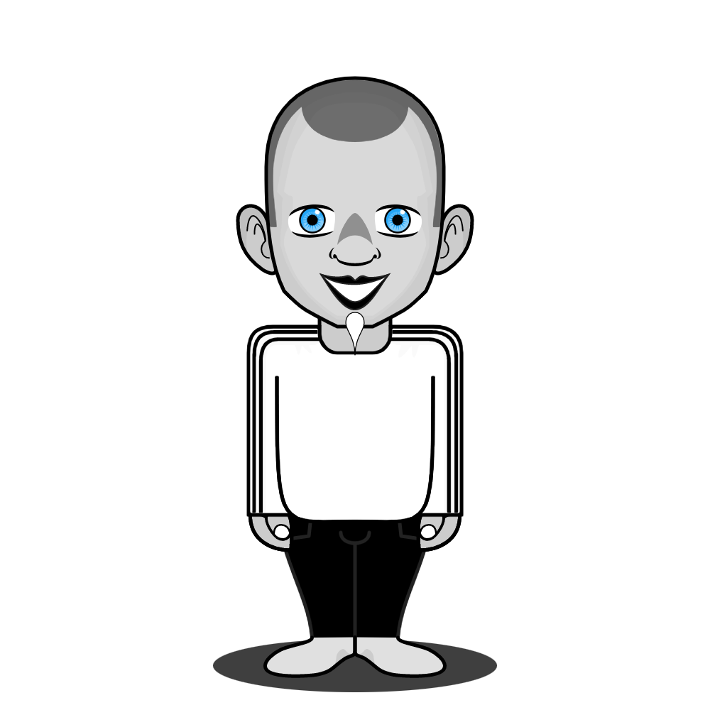

| Valentin | Adrien | Louis | Maxime | Ozan | Sacha |
|---|---|---|---|---|---|
|  | |||||
| C'est un homme ? C'est une femme ? Personne ne le sait ! Mais ce dont on est sur c'est qu'il/elle accourera toujours a votre secours sauf si vous n'adherez pas au valeurs des non-binaires | Un watibg capable de fumer une clope a la vitesse de flash. Son surnom : Le Pompier | Cousin de Hulk Il a hérité des mêmes capacités. il sera toujours la pour défendre son pays sauf si sur le trajet il croise un BK ou un KFC car la bouffe avant tout ! |
Incroyable mais vrai, il sort tout droit du Voyage de Chihiro. Avec sa capacité a se transformer en dragon il pourra vous sauver en toute circonstances mais uniquement si vous êtes une petite fille comme chihiro | Partagé entre le réel et le virtuel, ce jeune héro esst capable d'invoquez des personnages de son jeu préféré : League of legends Cependant il n'arrive pas toujours à se détacher de ses parties en ranked. |
Sacha aka Salto, Ce n'est pas qu'une simple plateforme de streaming. Il peut sortir n'importe quelle référence de n'importe quel sujet. Un allié efficace si vous souhaitez tout connaître. |